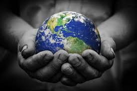
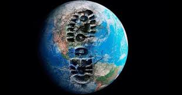

What is Sustainability?
Sustainability is about how we live on earth and how we treat our planet. The meaning can change depending on what context we are talking about. Sustainability has three main subjects: Environment, economy and society. Most of the time the environment is the main subject out of all of them because of problems like climate change and biodiversity. Sustainability can influence the entire world on a global scale and on an individual level. The term “Sustainable development” is used in a similar way, but UNESCO explains sustainability as a long-term goal, while sustainable development is how we reach that goal.
Sustainability is all about meeting the needs without compromising the future generations. Sustainability involves making decisions that focuses on renewable resources. Sustainability encourages practices that promote economic growth while reducing waste and carbon emissions.
In short terms sustainability is about renewability and finding ways for future generations to thrive.
How can we preserve the planet in our everyday life.
Everyone can and should live a sustainable life. One way is to follow the EU's Sustainable Development Goals. Some of the main focuses of sustainability is less plastic so you avoid Single Use plastics. Doing it is the easiest way to start a sustainable life. Half of all the plastic produced each year is single use items like plastic straws.
Another way to live more sustainable is to recycle correctly and to reduce food waste. Some way you could reduce food waste is to put food inside boxes and eat it later. This will also save you time making more food as you can just microwave the leftovers. Thirty percent of food ends up as waste and is harmful to the environment by releasing methane as it rots.
Diet
To preserve the wildlife one of the key factors can be to change your diet and reduce the amount of meat you eat. Eating more sustainable food can help the environment and reduce the amount of land we use to grow food. Dr. Hunnes says. “A vegan or plant-based diet can grow 10,000 times as many calories on one acre of land as growing an animal”
One of the benefits of eating more plants is that you may be able to find edible plants in nature. Say you're stranded in the wilderness, knowing what plants are safe for consumption could help you out massively.
Technology
Technology is a major factor that can change how we live our lives. There are multiple different ways to get electricity but the most sustainable ones are Wind turbines, Solar panels, Hydropower and Bioenergy. These are all renewable sources of energy in use today. Norway's main source of electricity comes from Hydropower.
Hydropower is a form of renewable energy that harnesses the energy of water moving from higher to lower elevations. It is generated from rivers and reservoirs. Hydropower is currently the largest source of renewable energy in the world.

The anthropocene and why does it matter.
The word Anthropocene is a term used to describe the current geological age or impact we humans have had on the environment and the ecosystem. The earth is over 5 billion years old and modern humans have impacted the earth substantially for 200,000 years. It is a shift from the earth’s natural processes changing due to our actions such as industrialization, deforestation and pollution.
It matters because it shows the scale of our influence on the earth. Climate change, loss of biodiversity and extreme pollution are the main factors of the Anthropocene. Understanding that we are in such a predicament helps us understand the importance of sustainability. It helps us rethink how we live our lives and encourages us to be more sustainable in our daily lives.
